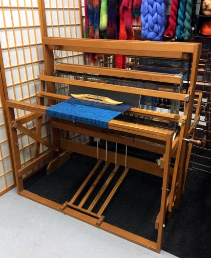
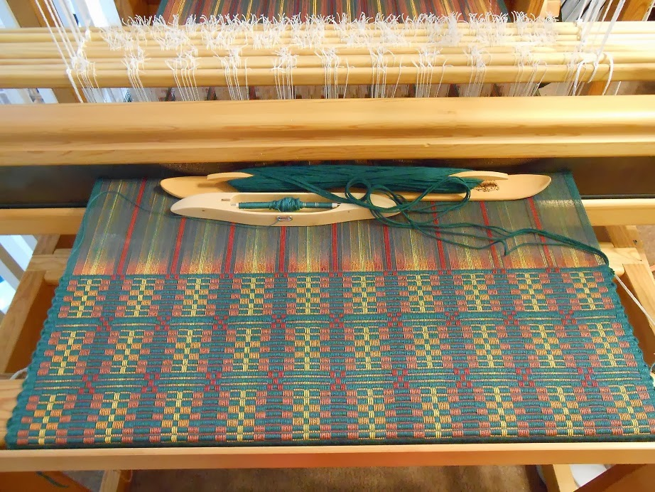
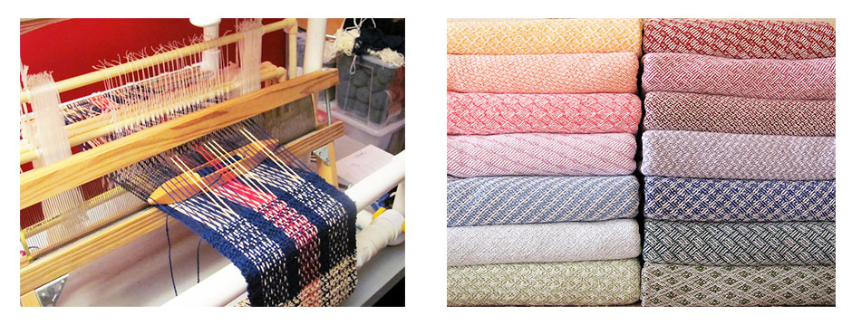

CLASSIC WEAVING: EUROPEAN STYLE
Weaving is a method of textile production in which two distinct sets of yarns or threads are interlaced at right angles to form a fabric or cloth. Similar methods are knitting, felting, and braiding or plaiting. The longitudinal threads are called the warp and the lateral threads are the weft or filling. The way the warp and weft interlace with each other is called the weave. The method in which these threads are inter woven affects the characteristics of the cloth creating different patterns.
The weaving methods used in the United States follow the European style of weaving using a classic European loom. This weaving loom has not changed much from the ones used in the past in Italy, France and England. The majority of woven products created with those techniques produce one of three basic weaves: plain weave, satin weave, or twill. Woven cloth can be plain (in one colour or a simple pattern), or can be woven in decorative or artistic design.

